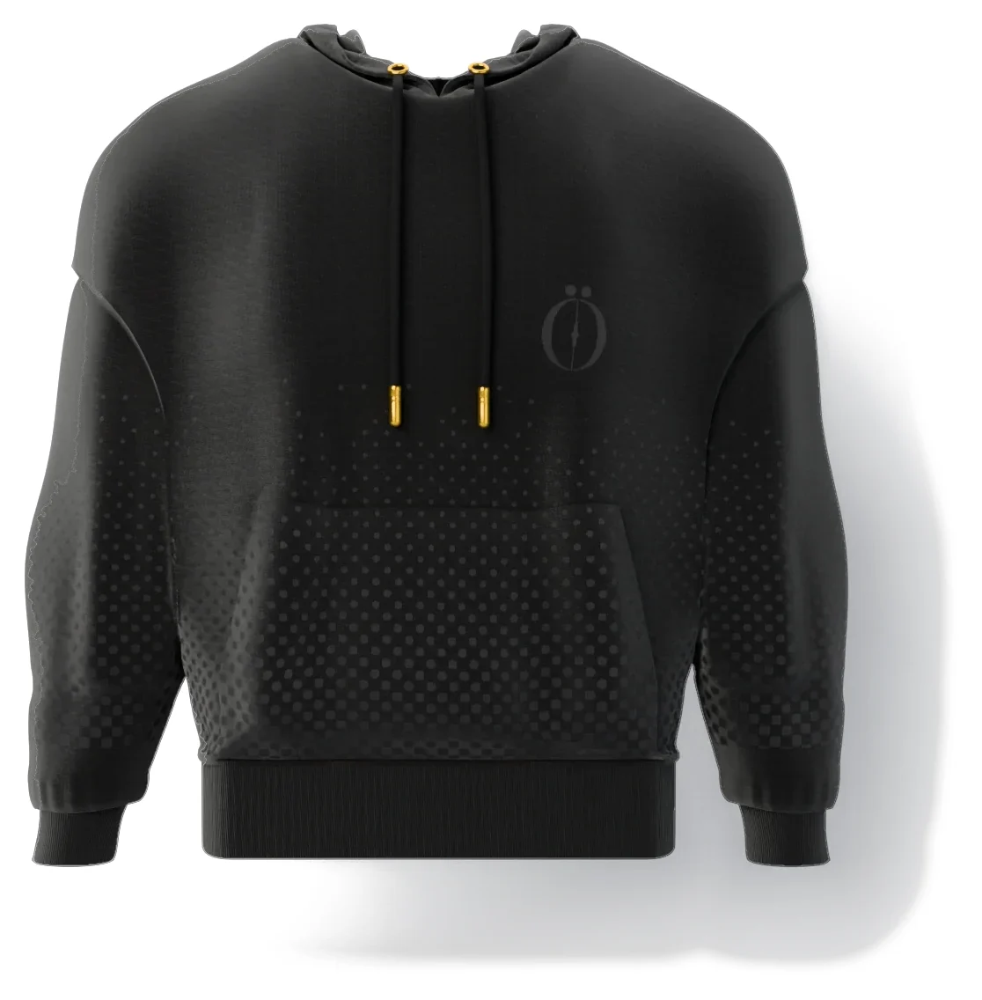
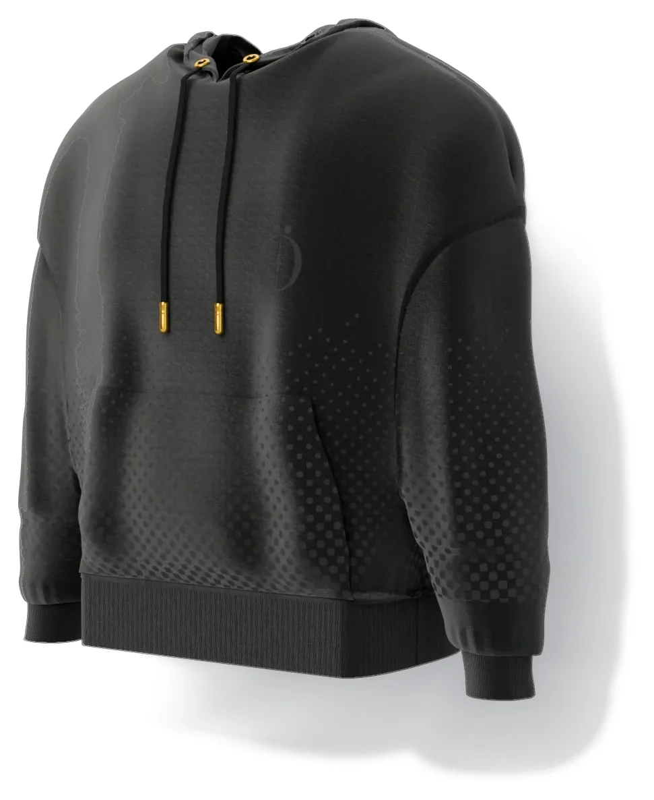
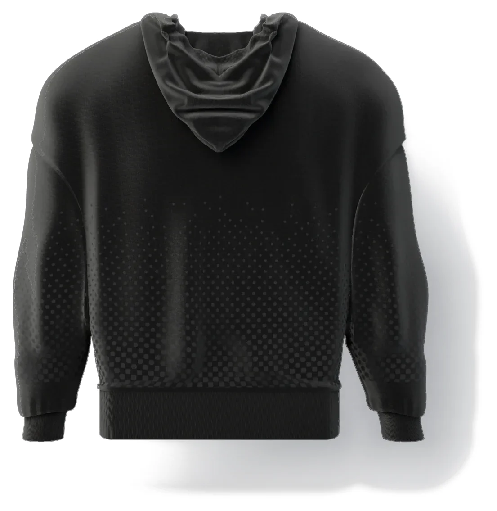
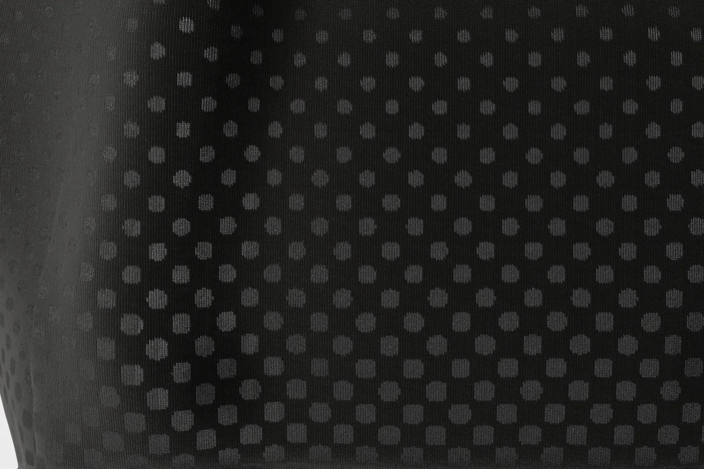
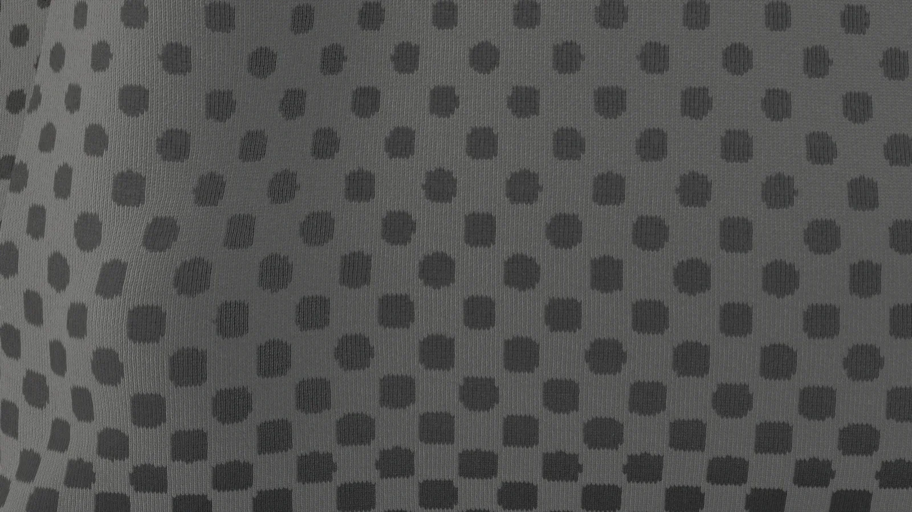
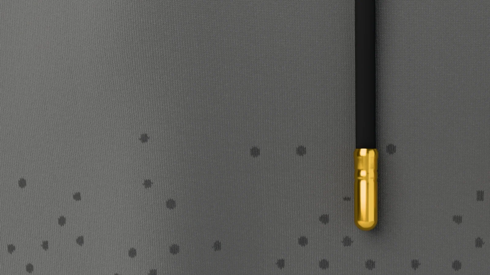
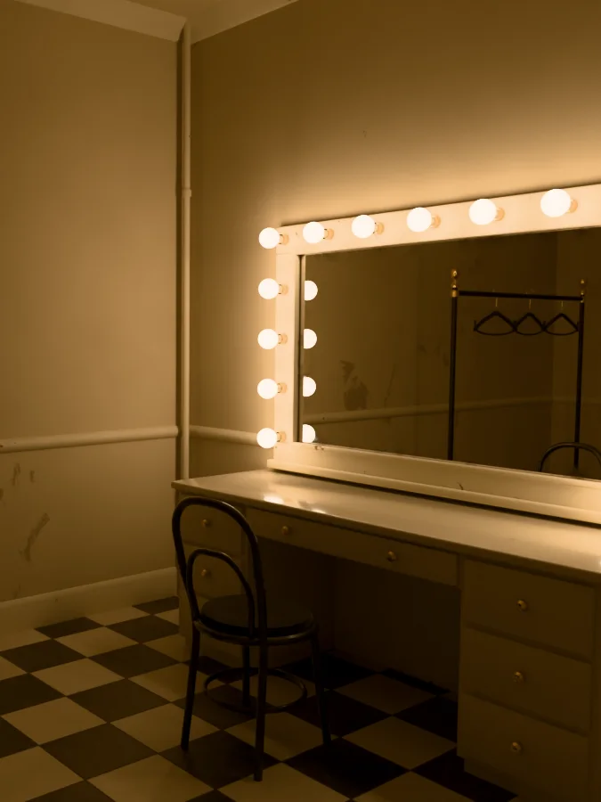

STAND-IN · img/carbonado/front/master.* (departments/apparel/new-pieces-2026-11/build/quiet-black/site/quiet_black_front_16k.png; 16K, 8640 × 15360)
STAND-IN · img/carbonado/three-quarter/master.* (three-quarter view, 8K; 8K, 4320 × 7680)
STAND-IN · img/carbonado/back/master.* (back view, 8K; 8K, 4320 × 7680)
STAND-IN · img/carbonado/detail-raking/master.* (under raking light, 8K close-up; 8K, 7680 × 4320)
STAND-IN · img/carbonado/detail-hem/master.* (the hem band, 8K close-up; 8K, 7680 × 4320)
STAND-IN · img/carbonado/detail-fade/master.* (the fade, 8K close-up; 8K, 7680 × 4320)Chapter I · Knitwear
Carbonado
Knit hoodie
Black, and then a darker black. A field of dots in matte and mercerised yarn that shows only where the light finds it, gathered at the hem and gone by the chest. The Ö small, over the heart.
- KNIT
- 28-GAUGE DOUBLE JACQUARD
- WEIGHT
- 300 GSM
- YARN
- MATTE AND MERCERISED BLACK COTTON
- COLOURWAY
- BLACK / BLACK
- SIZE
- S · M · L · XL · XXL
Price on request
ReserveMade to order. Delivery date confirmed by email.
Delivered in the house box.
Details
- Made to order
- Made to order. We email your delivery date once production is confirmed. Cancel for a full refund any time before production starts.
- Returns
- Size exchanges within 14 days of delivery, unworn and with tags. Returns
- Care
- Wash cold, inside out, on a gentle cycle. Dry flat. No tumble dryer, no bleach. Care
- Size
- The measurements

STAND-IN · img/carbonado/world/master.* (C7: the last frame, the world plate (the dressing room); 8K, 5760 × 7680)Where it is going · C7
The dressing room
The chair at the mirror, turned out.
On the screen in the film, the picture is tomorrow: each piece in the place it is going, with one place kept for someone.
The maker’s notes
Carbonado, the Quiet Black hoodie
- It begins as two black cottons: a matte one for the ground, a mercerised one for the dots.
- The dots sit on a 12 mm screen at 45 degrees and show only by their sheen.
- They meet as a checker at the hem band and thin out to plain black about 60% of the way to the neck.
- Toward the top, whole dots drop out one by one; none shrinks to a speck.
- The mark sits on the left chest, 6.0 by 4.8 cm, in the mercerised yarn.
Behind it: the hood and the rib, plain matte black.
Read the poem